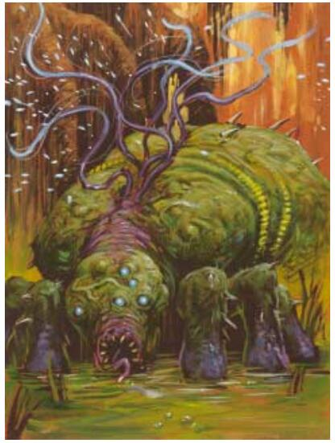

电鞭怪(Spark Lasher) CR 2
中型异怪
第一眼看上去会以为它是某种湿润的沼泽植物,但很快就会发现其实它是一种丑陋的,长着六条腿的矮壮生物。它的头部瘤状向前突出,大部分被嘴巴占据,沿着它的背部长着众多闪烁着电火花的触手。

|
生命骰: |
3d8+3(16hp) |
|
先攻: |
+1 |
|
速度: |
30尺(6格),游泳10尺 |
|
防御等级: |
14(+1敏捷,+3天生),碰触11,措手不及13 |
|
基本攻击/擒抱: |
+2/+1 |
|
攻击: |
触手+3近战碰触(3d8电击)或啮咬+3近战(1d6-1) |
|
全力攻击: |
触手+3近战碰触(3d8电击)或啮咬+3近战(1d6-1) |
|
面宽/触及: |
5尺/5尺 |
|
特殊攻击: |
电击伤害 |
|
特殊能力: |
黑暗视觉60尺,免疫电击 |
|
豁免: |
强韧+2,反射+4,意志+2 |
|
属性: |
力量8,敏捷13,体质13,智力12,感知8,魅力13 |
|
技能: |
躲藏+1*,威吓+7,生存+5,游泳+13 |
|
专长: |
闪电反射,武器娴熟 |
|
地域: |
温暖沼泽 |
|
组织: |
单独,成队(2-5加0-2移动壁障) |
|
挑战等级: |
2 |
|
宝物: |
1/10钱币;50%商品;50%物品 |
|
阵营: |
通常混乱邪恶 |
|
进化: |
4-6HD(中型);7-9HD(大型) |
|
等级调整: |
- |
居住在沼泽地区的电鞭怪经常被误认为植物,直至其向对手挥舞起触手。
包裹着电鞭怪的灰绿色皮肤,褶皱众多且崎岖不平,为其提供了保护色。电鞭怪靠着六条腿在沼泽浅处四处活动。
电鞭怪在水中游动时只有触手会露在水面上,看上去像是纠缠在一起的大团植物。当电鞭怪遭遇到对其来说过于强大的生物时,其在逃跑前会威吓这个潜在的敌人。
拥有着扭曲但相当高的智能,电鞭怪会说水族语和炼狱语。但谁会和电鞭怪对话至今仍不清楚。
战斗:
单独行动时,电鞭怪喜欢突袭没有准备的闯入者。如果已经被发现,电鞭怪会浸没自身然后从另一个方向接近闯入者。成队行动时,电鞭怪们会试图包围闯入者,将随行的移动壁障布置在它们前方。
当面对免疫于电击的生物时,电鞭怪会改而依靠其无力的啮咬攻击,但更大的可能是其会逃走。
电击伤害(Su):电鞭怪的触手碰触攻击能造成3d8点电击伤害。
技能:电鞭怪在任何游泳检定上都有+8的种族加值。在游泳检定中它总可以取10,即使处于匆忙状态或是被威胁时也是如此。它可以在游泳时使用奔跑动作,假如它游得是一条直线的话。*当在沼泽中时电鞭怪在躲藏检定上有+8加值。